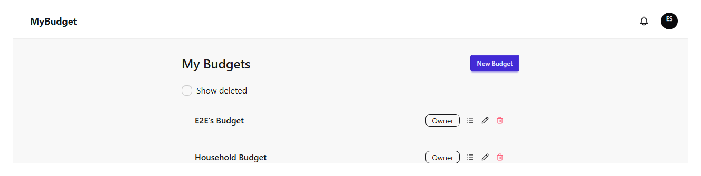
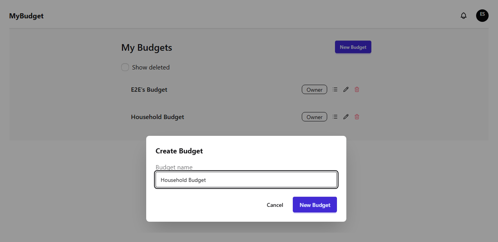
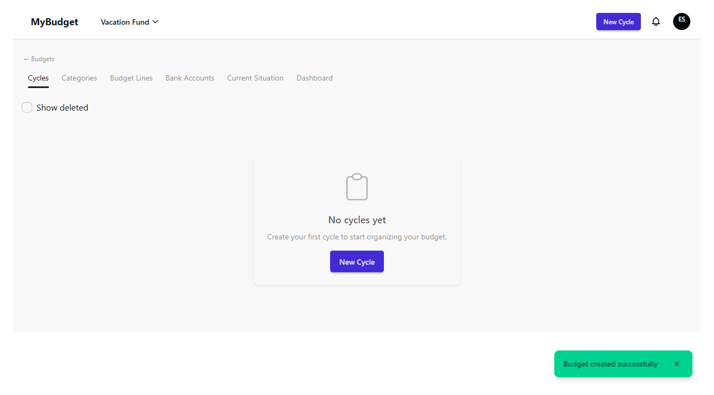
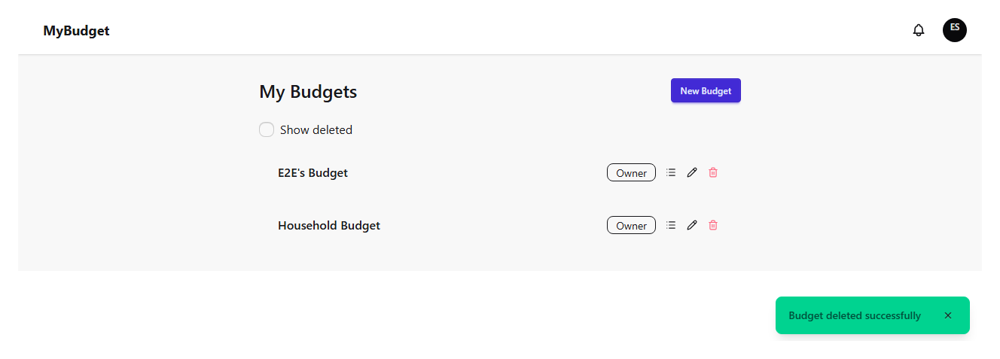
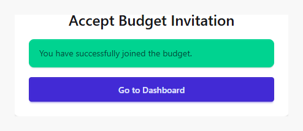
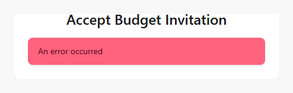

Presupuestos
Un presupuesto es el contenedor de nivel superior para todo lo demás en MyBudget: ciclos, categorías, cuentas y miembros pertenecen todos a un único presupuesto. Este capítulo cubre cómo ver tus presupuestos, crear uno nuevo, eliminarlo y restaurarlo, e invitar a alguien más a unirse.
Tu lista de presupuestos
Al iniciar sesión llegás a /budgets, que lista cada presupuesto al que pertenecés
junto con tu rol en cada uno. Si pertenecés a exactamente un presupuesto activo, MyBudget
salta esta pantalla y te lleva directo a él — la lista sólo aparece cuando tenés más de uno, o
cuando volvés a ella a propósito.

Creando un presupuesto
"Nuevo Presupuesto" abre un formulario que sólo pide un nombre. Los nombres de presupuesto deben ser únicos por cuenta — reutilizar uno que ya tenés se rechaza en vez de crear un duplicado.

Crear un presupuesto te convierte en su propietario/a y te lleva directo a él — una lista de ciclos vacía, lista para que agregues tu primer ciclo.

Renombrar y eliminar un presupuesto
Propietarios y administradores pueden renombrar un presupuesto con doble clic sobre su nombre en la lista, o con el ícono de lápiz. Sólo el propietario puede eliminar un presupuesto — la eliminación es un borrado suave detrás de un diálogo de confirmación, así que el presupuesto desaparece de la lista activa pero no se destruye.

Activar "Mostrar eliminados" revela los presupuestos eliminados con una etiqueta "Eliminado" y una acción de Restaurar, así que un borrado accidental siempre es recuperable.
Invitar a alguien a un presupuesto
Propietarios y administradores pueden invitar a otra persona desde el ícono de invitar en la lista. El formulario de invitación pide un email y un rol (Admin, Operador, o Sólo lectura — un presupuesto no se puede compartir con alguien como un segundo Propietario). MyBudget rechaza la invitación de entrada si esa persona ya es miembro, o si quien invita no tiene permiso para invitar a ese presupuesto.
La persona invitada recibe un email con un enlace para aceptar. Si ya tiene una sesión de MyBudget abierta, aceptar agrega el presupuesto a su lista de inmediato y muestra un mensaje de éxito.

Un enlace vencido, uno ya usado, o uno abierto con el email equivocado muestra un error en vez de romperse — la persona invitada puede pedirle al propietario o a un administrador del presupuesto que le envíe uno nuevo. El capítulo de Miembros cubre cómo se administran los roles una vez que alguien se unió.
